Brand + Visual Designer
3 months
Web + Mobile
As a attempt to strengthen my design skills outside of work, I took a course at SVA called "Experiencing Brands Through Interaction Design". I was intrigued by the concept of the course and thought it would be a good opportunity to learn more about branding.
Voice Point is a brand that stemmed from my interest in voice acting and my desire incorporate it in my design work. While researching, I noticed that there was a gap in voice acting resources, where it was very difficult to find a single source of education, collaboration, and networking. I took the opportunity to create something that might close that gap: Voice Point, a one-week hybrid conference for working and aspiring voice actors, fans, and other professionals in the industry.
The final result was a creative brief, a defined visual system, and a series of high-fedility mockups for both web and mobile platforms.
Create a distinct brand that supports the growth of the voice acting community while addressing weaknesses commonly found in other resources.
The creative spirit of voice acting inspired me and I wanted to create a brand that stood out from the competition. I noticed that not many competitors had a strong brand or a sense of visual cohesion on their websites.
In order to develop the brand’s character, I explored many potential directions.
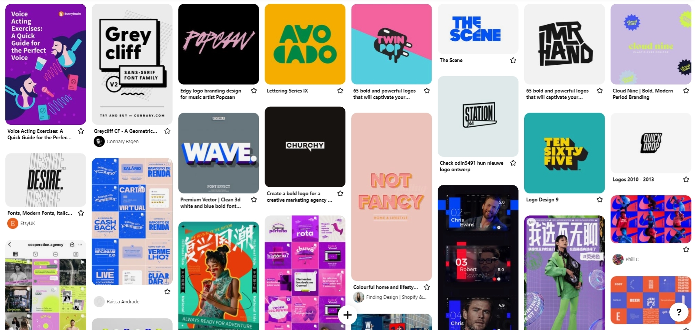One of the many moodboards I put together for the project.
During these early stages, I didn't quite have a sense of what I wanted to create. However, I did know that I wanted to make something bright and bold to reflect the voice acting industry.
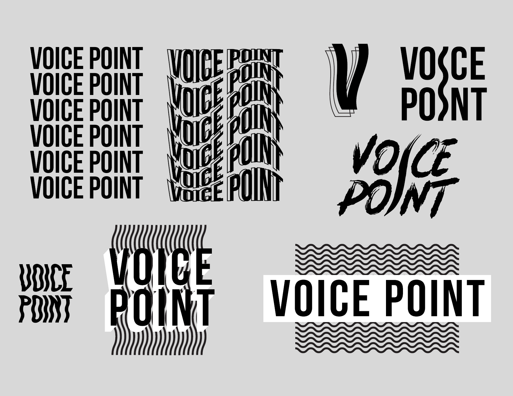Potential logo designs
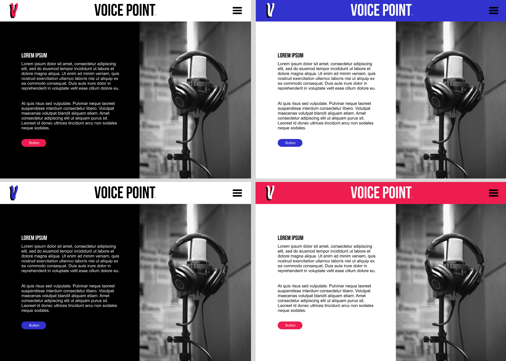Trying out a color palette and a sample web layout
Eventually I refined the color palette into something loud, but simple. I wanted the brand to be a vehicle for eduational and career resources in addition to being attention-grabbing. I didn't want the brand to be too distracting and potentially take away from its credibility, so I settled on a nice combination of black, white, and teal.
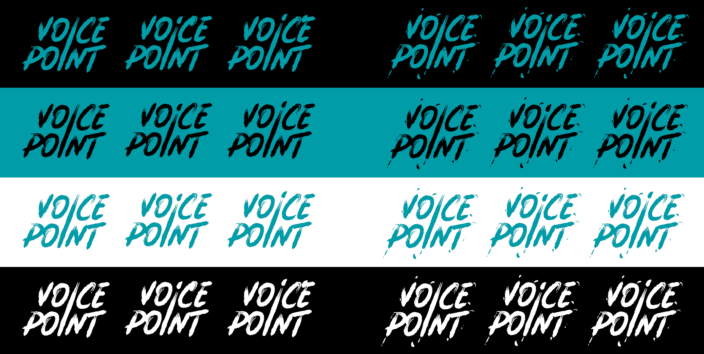Testing different logo and color combinations
I also took the opportunity to create an eye-catching wordmark. While Voice Point is meant to be taken seriously, that doesn't mean it can't be playful or artsy. In my search for a typeface for the logotype, I stumbled upon Batsand, an incredible handpainted script by Lettersiro Studio. I knew it was the perfect match for my brand.
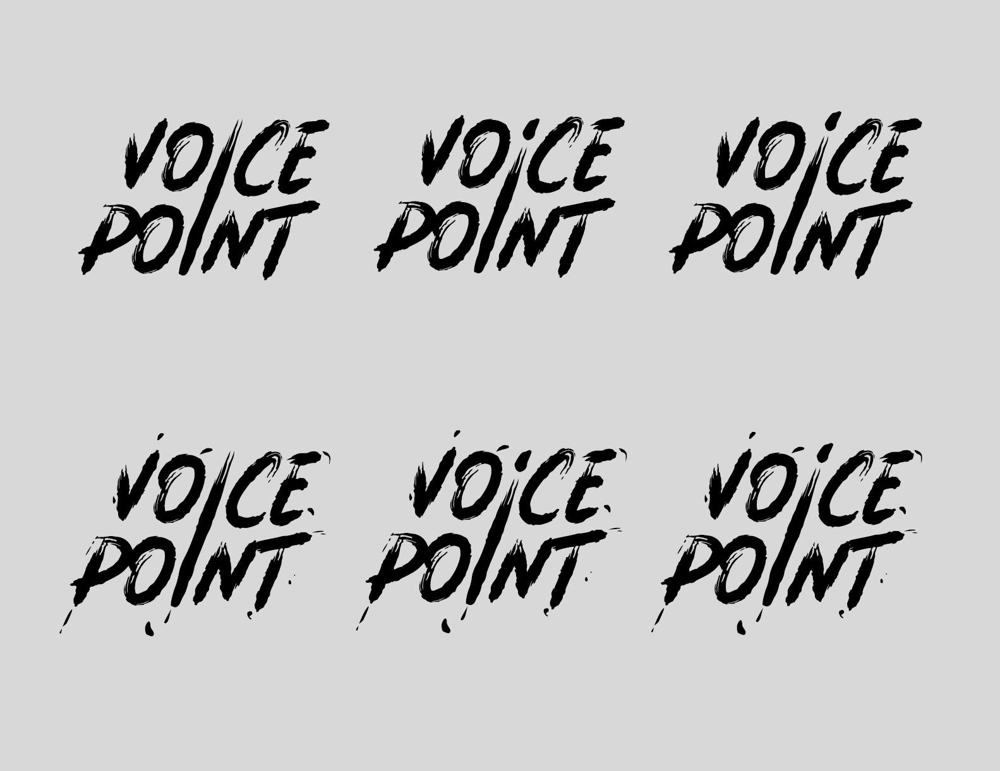Logo options
After a series of refinements, I put together a finalized visual system for Voice Point. It details all of the elements of the brand and how they may be used.
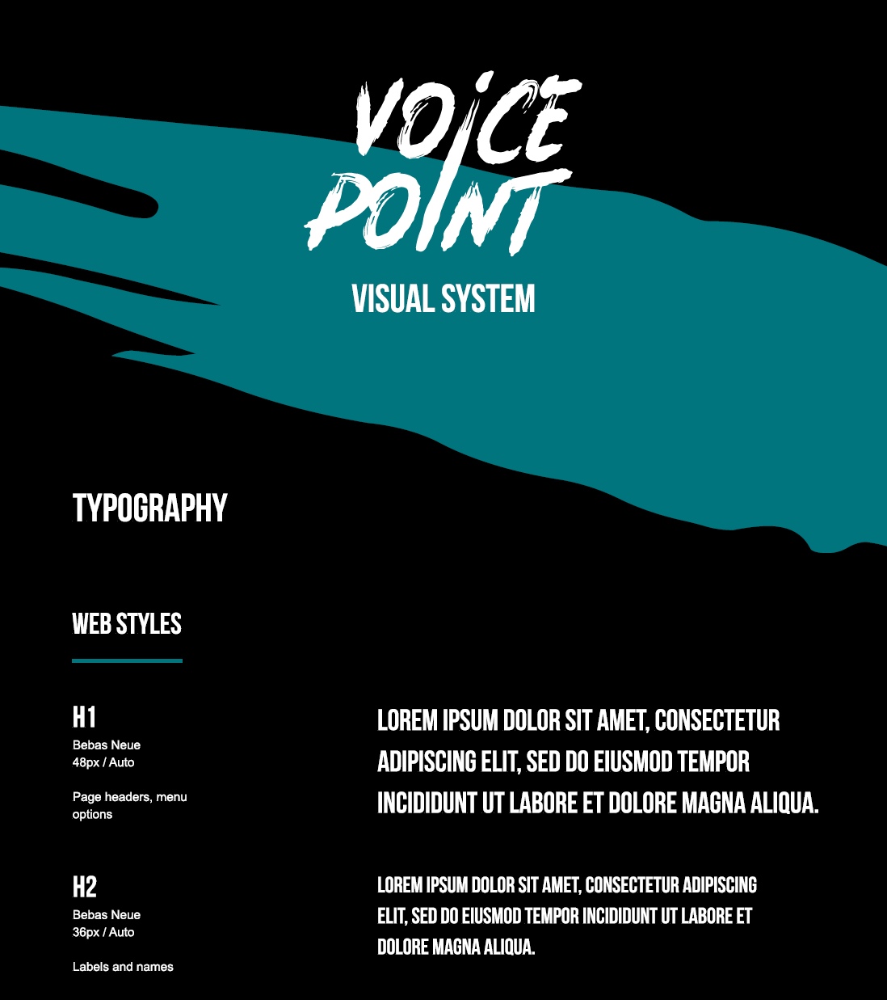A sample of defined text styles
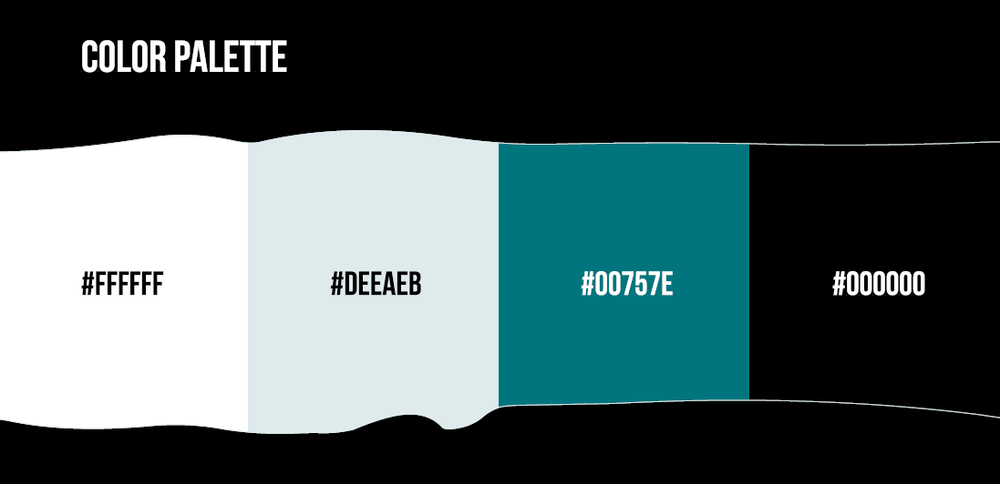The brand color palette
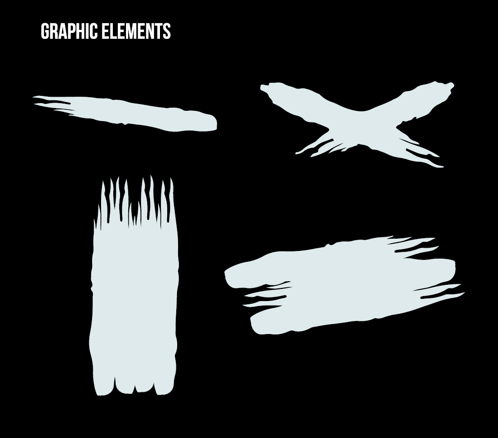Common brand motifs
Mockups were created for both web and mobile to show the brand’s versatility in different touchpoints.
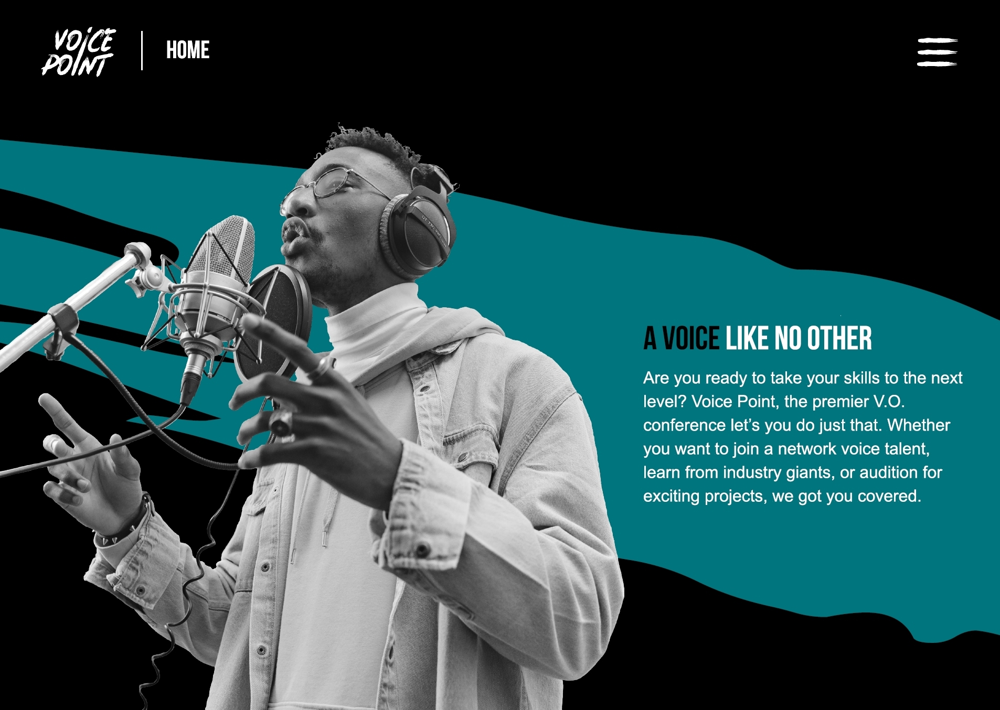Home page
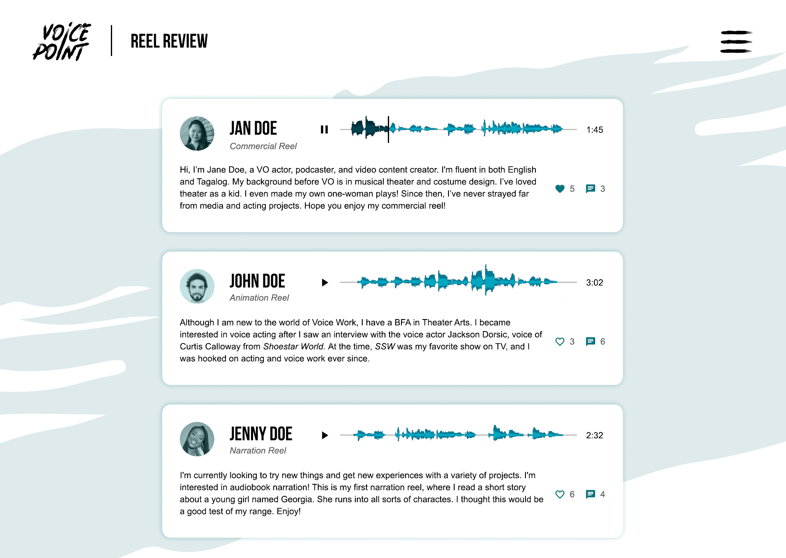The Reel Review page, where people can listen to your audio reel and give feedback.
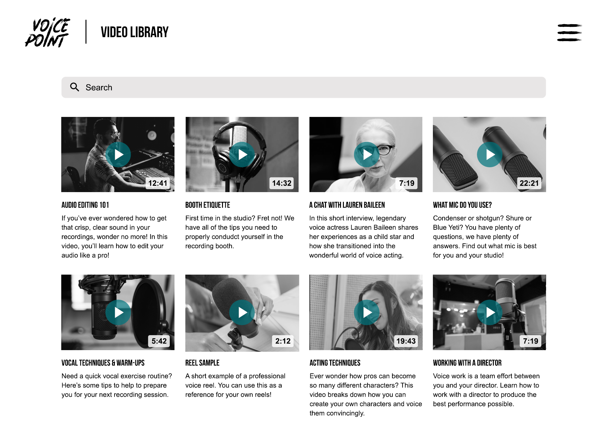If the live version of an educational session is missed, it can be accessed as a recording in the video library.
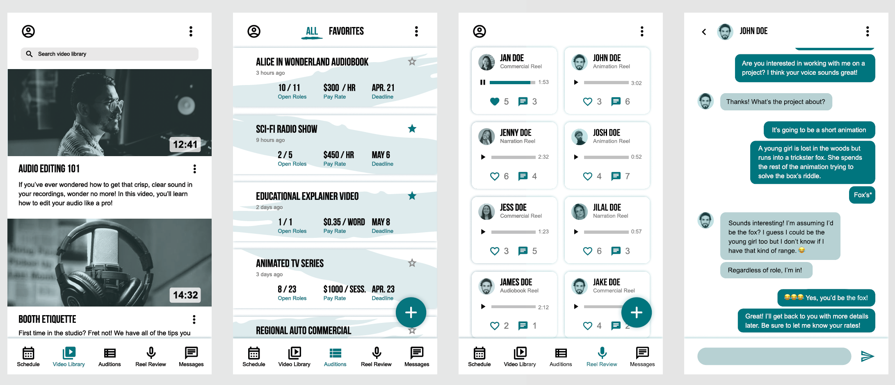Mobile versions of the Video Library, Auditions, Reel Review, and Messages pages.
I would also like to flesh out some of the pages more since not all of them were covered in this initial conceptual stage. Afterwards, maybe I could find a developer to make my vision a real website and app!